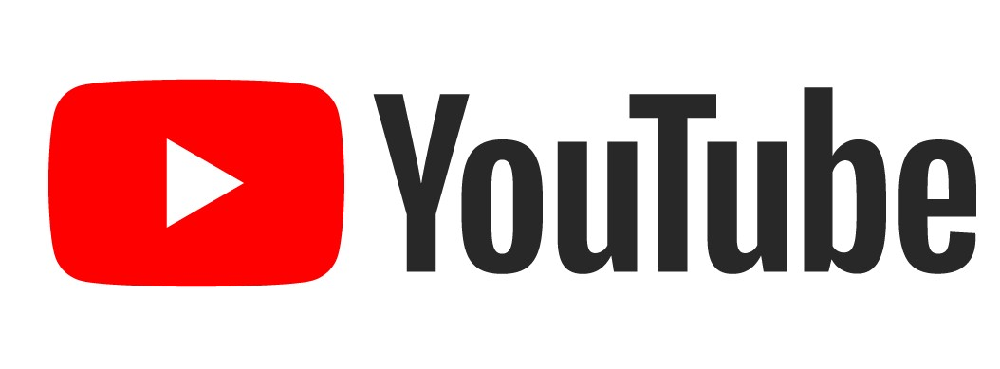

Sejarah Google
Google LLC adalah sebuah perusahaan multinasional Amerika Serikat yang berkekhususan pada jasa dan produk Internet. Produk-produk tersebut meliputi teknologi pencarian, komputasi web, perangkat lunak, dan periklanan daring. Google
didirikan oleh Larry Page dan Sergey Brin saat masih mahasiswa Ph.D. di Universitas Stanford. Mereka berdua memegang 16 persen saham perusahaan. Mereka menjadikan Google sebagai perusahaan swasta pada tanggal 4 September 1998.
Pernyataan misinya adalah "mengumpulkan informasi dunia dan membuatnya dapat diakses dan bermanfaat oleh semua orang", dan slogan tidak resminya adalah "Don't be evil". Pada tahun 2006, kantor pusat Google pindah ke Mountain View,
California.
Sejak didirikan, pertumbuhan perusahaan yang cepat telah menghasilkan berbagai produk, akuisisi, dan kerja sama di bidang mesin pencari inti Google. Perusahaan ini menawarkan perangkat lunak produktivitas daring (dalam jaringan),
termasuk surat elektronik (surel), paket aplikasi perkantoran, dan jejaring sosial. Produk-produk komputer mejanya meliputi aplikasi untuk menjelajah web, mengatur dan menyunting foto, dan pesan instan. Perusahaan ini memprakarsai
pengembangan sistem operasi Android untuk telepon genggam dan Google Chrome OS untuk jajaran netbook Chromebook. Google sudah beralih ke perangkat keras komunikasi. Mereka bekerja sama dengan berbagai produsen elektronik besar untuk
memproduksi perangkat Nexus-nya dan mengakuisisi Motorola Mobility pada Mei 2012. Tahun 2012, infrastruktur serat optik dipasang di Kansas untuk memfasilitasi layanan Internet pita lebar Google Fiber.
Perusahaan ini diperkirakan mengoperasikan lebih dari satu juta server di beberapa pusat data di seluruh dunia dan memproses lebih dari satu miliar kueri pencarian dan sekitar 24 petabita data buatan pengguna setiap harinya. Pada
bulan Desember 2012, Alexa menyebut google.com sebagai situs web paling banyak dikunjungi di dunia. Situs-situs Google dalam bahasa lain masuk peringkat 100 teratas, sebagaimana halnya situs milik Google seperti YouTube dan Blogger.
Google menempati peringkat kedua di basis data ekuitas merek BrandZ. Dominasi pasarnya menuai kritik mengenai hak cipta, penyensoran, dan privasi. Pada tahun 2014, Google juga mendapat penghargaaan dari Business Indeed sebagai
perusahaan yang memiliki merk paling bernilai.
Pada 10 Agustus 2015, Google melalui postingan blog, CEO Google Larry Page mengumumkan pembentukan perusahan baru bernama Alphabet yang akan menjadi perusahaan induk mencakupi Google dan usaha-usaha lain yang tak terlalu terkait erat
dengan bisnis utama Google. Pada restrukturisasi tersebut, Larry Page akan menjadi CEO perusahaan baru Alphabet. Sergey Brin menjabat sebagai President didampingi Erich Schmidt sebagai Executive Chairman. Sedangkan, CEO Google akan
dijabat oleh Sundar Pichai.
Produk Google
1. Mesin Pencari Google
 Google dikenal luas karena layanan pencarian webnya, yang mana merupakan sebuah faktor besar dari kesuksesan perusahaan ini. Pada Agustus 2007, Google merupakan mesin pencari di web yang paling sering digunakan dengan pangsa pasar
sebanyak 53,6%, kemudian Yahoo! (19,9%) dan Live Search (12,9%). Google memiliki miliaran halaman web, sehingga pengguna dapat mencari informasi yang mereka inginkan, melalui penggunaan kata kunci dan operator. Google juga telah
menggunakan teknologi Pencarian Web pada layanan pencarian lainnya, termasuk, Pencarian Gambar, Google News, situs perbandingan harga Google Product Search, arsip Usenet interaktif Google Groups, Google Maps dan lainnya.
Google dikenal luas karena layanan pencarian webnya, yang mana merupakan sebuah faktor besar dari kesuksesan perusahaan ini. Pada Agustus 2007, Google merupakan mesin pencari di web yang paling sering digunakan dengan pangsa pasar
sebanyak 53,6%, kemudian Yahoo! (19,9%) dan Live Search (12,9%). Google memiliki miliaran halaman web, sehingga pengguna dapat mencari informasi yang mereka inginkan, melalui penggunaan kata kunci dan operator. Google juga telah
menggunakan teknologi Pencarian Web pada layanan pencarian lainnya, termasuk, Pencarian Gambar, Google News, situs perbandingan harga Google Product Search, arsip Usenet interaktif Google Groups, Google Maps dan lainnya.
2. Youtube

YouTube adalah sebuah situs web yang memungkinkan pengguna mengunggah, menonton, dan berbagi video. Perusahaan ini berkantor pusat di San Bruno, California, dan memakai teknologi Adobe Flash Video dan HTML5 untuk menampilkan berbagai
macam konten video buatan pengguna/kreator, termasuk klip film, klip TV, dan video musik. Selain itu, konten amatir seperti blog video, video orisinal pendek, dan video pendidikan juga ada dalam situs ini.
3. Google Translate
 Google Translate adalah layanan penerjemahan statistik dan neural machine gratis multibahasa yang dikembangkan oleh Google, untuk menerjemahkan teks dan situs web dari satu bahasa ke bahasa lain. Ini menawarkan antarmuka situs web,
aplikasi seluler untuk Android dan iOS, dan antarmuka pemrograman aplikasi yang membantu pengembang membangun ekstensi browser dan aplikasi perangkat lunak. Pada April 2020, Google Translate mendukung 109 bahasa di berbagai tingkatan
dan hingga April 2016, mengklaim lebih dari 500 juta total pengguna, dengan lebih dari 100 miliar kata diterjemahkan setiap hari.
Google Translate adalah layanan penerjemahan statistik dan neural machine gratis multibahasa yang dikembangkan oleh Google, untuk menerjemahkan teks dan situs web dari satu bahasa ke bahasa lain. Ini menawarkan antarmuka situs web,
aplikasi seluler untuk Android dan iOS, dan antarmuka pemrograman aplikasi yang membantu pengembang membangun ekstensi browser dan aplikasi perangkat lunak. Pada April 2020, Google Translate mendukung 109 bahasa di berbagai tingkatan
dan hingga April 2016, mengklaim lebih dari 500 juta total pengguna, dengan lebih dari 100 miliar kata diterjemahkan setiap hari.
4. Google Drive
 Google Drive adalah layanan penyimpanan data tersinkronisasi yang dikembangkan oleh Google. Diluncurkan pada tanggal 24 April 2012, Google Drive memungkinkan penggunanya untuk menyimpan data di server mereka, mensinkronisasi data di
perangkat yang berbeda, dan saling berbagi berkas. Selain situs web, Google Drive juga menyediakan aplikasi-aplikasi dengan kemampuan offline untuk Windows dan komputer-komputer macOS, dan Android serta perangkat iOS. Google Drive
meliputi Google Docs, Google Sheets, dan Google Slides, yang mana merupakan bagian dari Google Docs Editor yang mengizinkan mengedit dokumen secara bersamaan atau berkelompok, spreadsheets, presentasi, menggambar, formulir, dll.
File-file yang dibuat dan diedit melalui Google Docs akan tersimpan di Google Drive.
Google Drive adalah layanan penyimpanan data tersinkronisasi yang dikembangkan oleh Google. Diluncurkan pada tanggal 24 April 2012, Google Drive memungkinkan penggunanya untuk menyimpan data di server mereka, mensinkronisasi data di
perangkat yang berbeda, dan saling berbagi berkas. Selain situs web, Google Drive juga menyediakan aplikasi-aplikasi dengan kemampuan offline untuk Windows dan komputer-komputer macOS, dan Android serta perangkat iOS. Google Drive
meliputi Google Docs, Google Sheets, dan Google Slides, yang mana merupakan bagian dari Google Docs Editor yang mengizinkan mengedit dokumen secara bersamaan atau berkelompok, spreadsheets, presentasi, menggambar, formulir, dll.
File-file yang dibuat dan diedit melalui Google Docs akan tersimpan di Google Drive.
Selain empat contoh diatas produk dari google masih banyak lagi seperti Google Mail, Google Meet, Google Classroom, dan lain-lain.